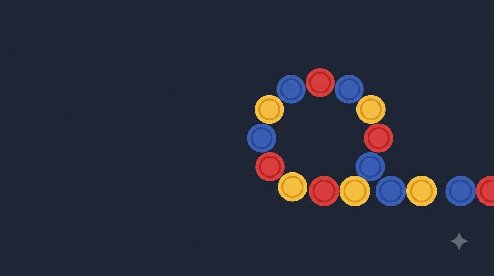
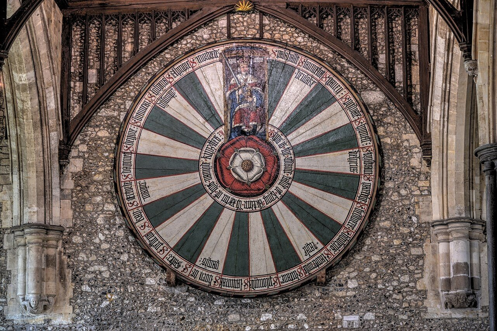
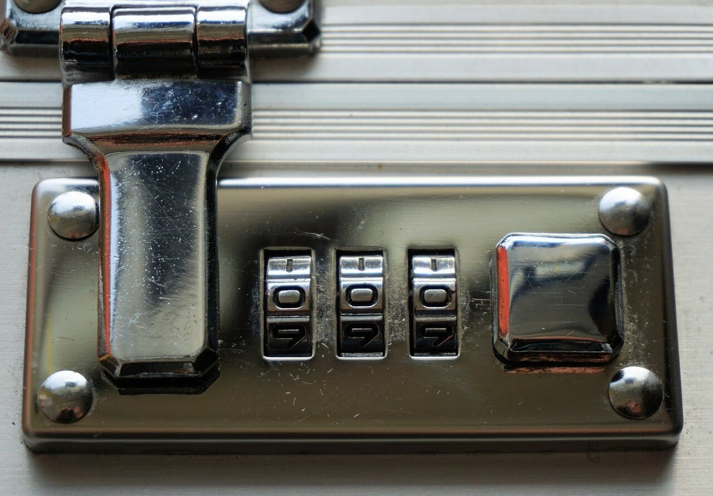
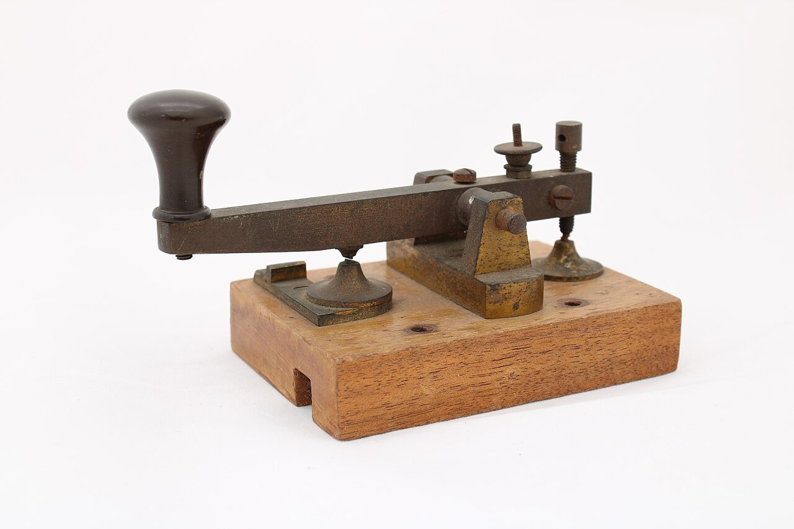
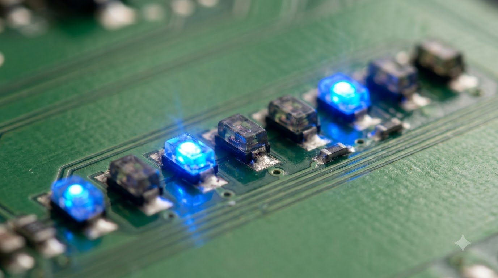
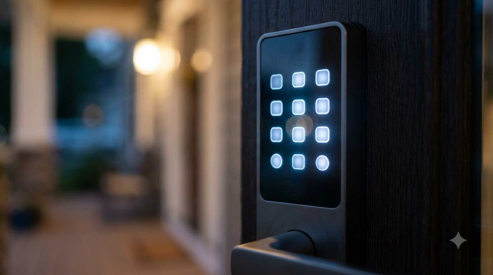
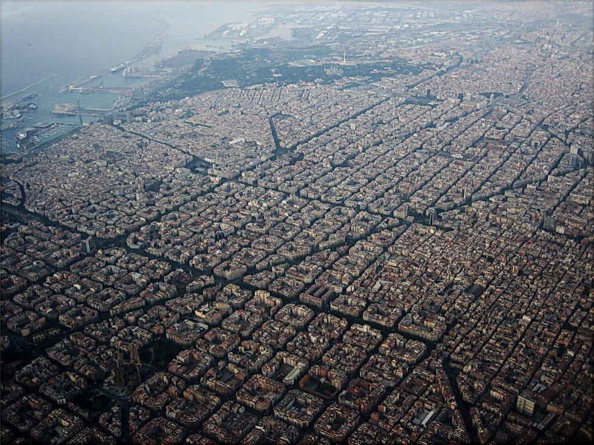
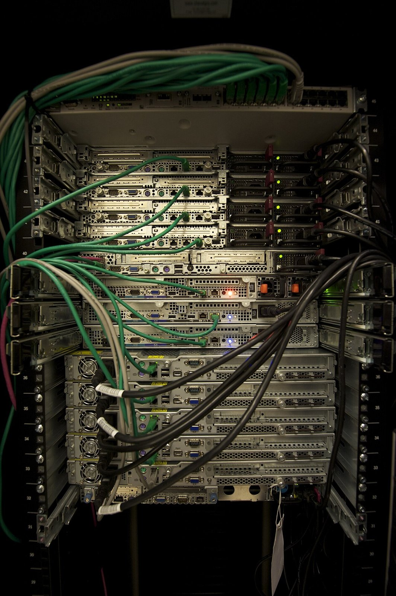
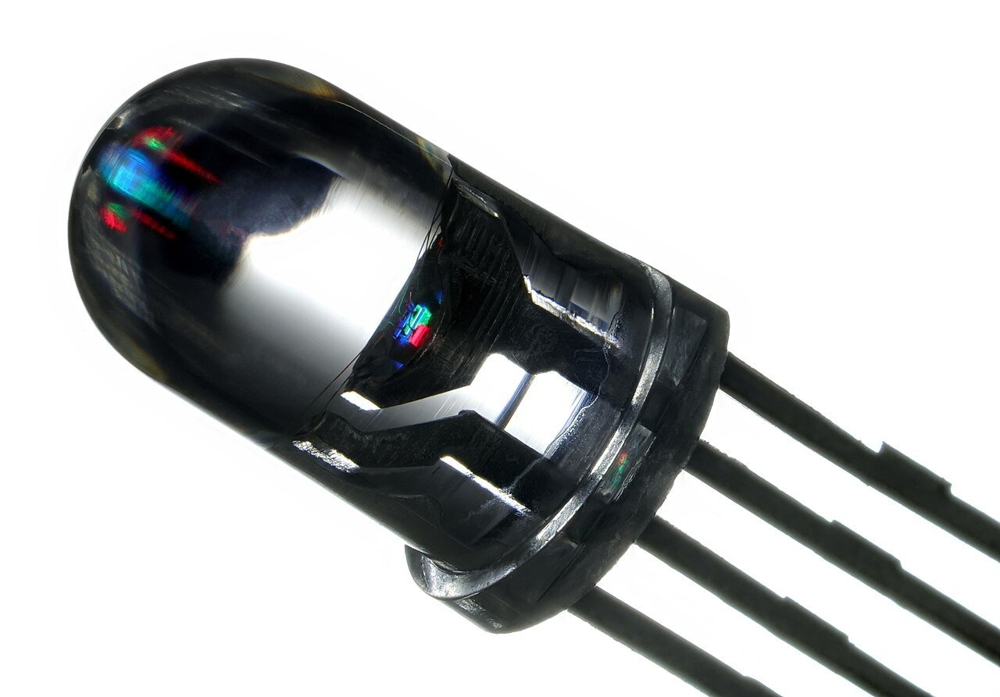

원순열 · 중복순열
같은 것이 있는 순열

원형으로 배열,
회전하여 같은 배열은 1가지
비유: 상석이 없는 아서왕의 원탁

같은 것을 여러 번
뽑을 수 있는 배열
비유: 숫자를 다시 써도 되는 자물쇠

구별되지 않는 것이
섞여 있는 배열
비유: 점과 선만 반복하는 모스 부호
비유: 아서왕의 원탁
상석이 없어 어느 자리든 동등한 배치
비유: 여행가방 번호 자물쇠
자리마다 0~9 중 아무 숫자나 다시 사용 가능

곱의 법칙: n을 r번 곱하기

비유: 모스 전신기
점(·)과 선(−) 두 기호만 반복해 문자를 표현
모스 부호의 수 3! ÷ 2! = 3가지
생각해 보기: 점 2개, 선 2개를 전부 나열하면 몇 가지?

비유: 바르셀로나 격자 도시
동쪽·북쪽으로만 가는 최단 이동
회로 배선·로봇 경로와 같은 구조
회전하여 같은 n가지를
1가지로 묶는 계산
자리마다 n가지,
r번 곱하는 계산
같은 것끼리의 자리 바꿈
중복을 나누는 계산

서버 6대를 원형 링 네트워크로
연결하는 배치의 수
(회전하여 같은 것은 같은 배치)

4가지 색을 낼 수 있는 LED 3개로
표시 가능한 신호의 수
(같은 색 중복 가능)
1 네 개, 0 두 개로 만드는
6비트 신호의 수
원탁 윈체스터 · Winchester Round Table 2014-09-02.jpg · August Schwerdfeger · CC BY 4.0
commons.wikimedia.org/wiki/File:Winchester_Round_Table_2014-09-02.jpg
번호자물쇠 · SuitcaseCombinationLock.jpeg · webandi from Pixabay · CC0
commons.wikimedia.org/wiki/File:SuitcaseCombinationLock.jpeg
모스전신기 · Morse Key.jpg · Lauren.mcalary · CC BY-SA 4.0
commons.wikimedia.org/wiki/File:Morse_Key.jpg
격자도시 바르셀로나 · Eixample aire.jpg · Alhzeiia · CC BY-SA 2.0
commons.wikimedia.org/wiki/File:Eixample_aire.jpg
서버랙 · Servers in a Rack.jpg · Abigor · CC BY-SA 3.0
commons.wikimedia.org/wiki/File:Servers_in_a_Rack.jpg
RGB LED · LED RGB 5mm.jpg · Mister rf · CC BY-SA 4.0
commons.wikimedia.org/wiki/File:LED_RGB_5mm.jpg
AI 생성 · 표지, 도입 영상, 원탁 회의, LED 회로, 도어락, 전신 기사, 화이트보드 · Google Flow (Nano Banana 2.1, Veo 3.1 Lite)로 생성
애니메이션 · manim으로 직접 제작 · 웹 버전 사진은 크기를 줄여 사용